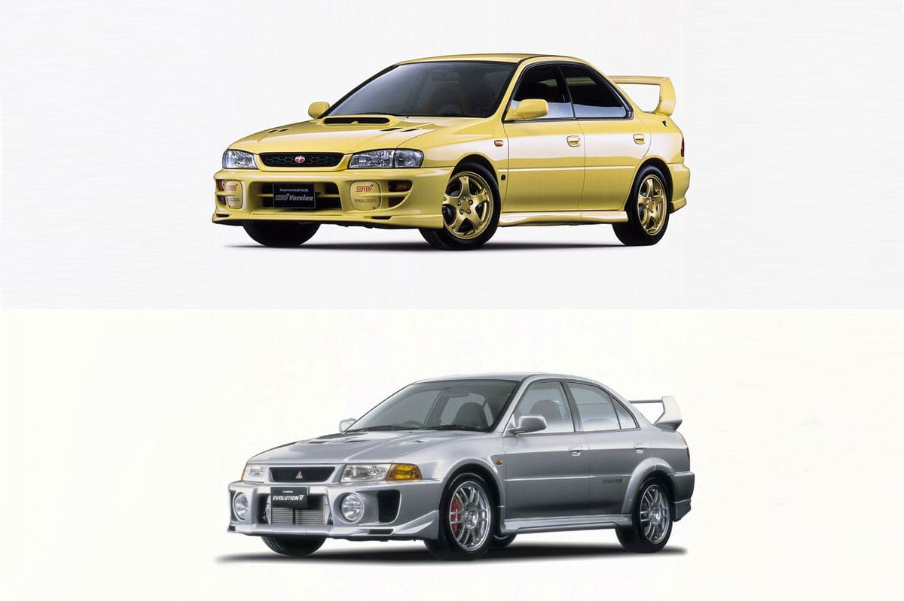
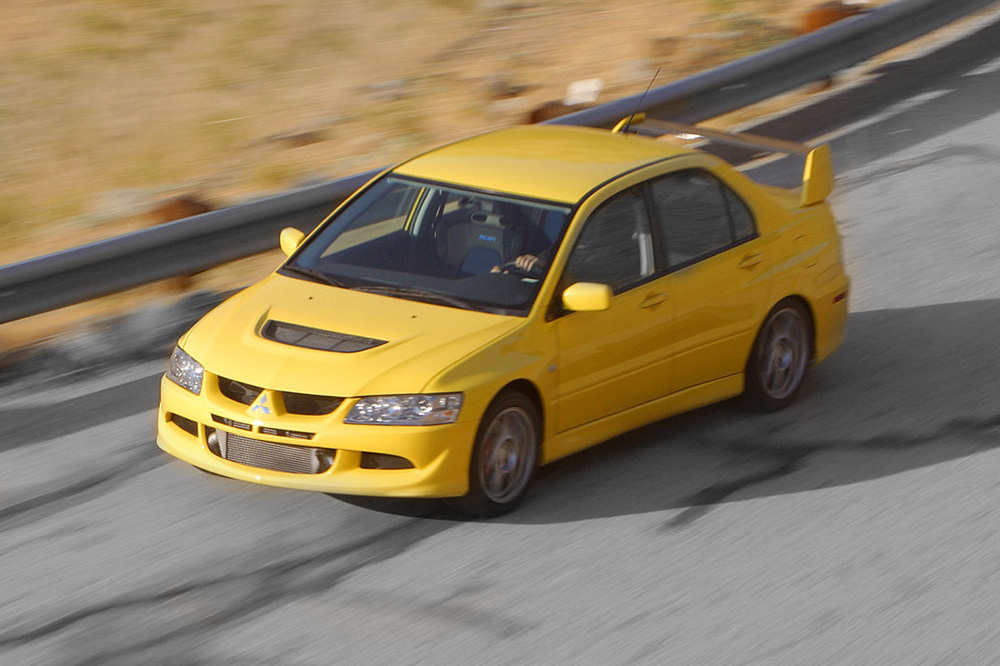

Subaru Impreza WRX o Mitsubishi Lancer Evo
Subaru Impreza WRX o Mitsubishi Lancer Evo: una gran batalla
Si has nacido, como mucho, a principios de la década de los años ’90, seguro que recuerdas el enfrentamiento entre estos dos coches japoneses. De hecho, el Subaru Impreza WRX STi todavía sigue entre nosotros, aunque no creemos que le quede mucho tiempo de vida tanto por su filosofía, poco atractiva para el comprador tipo, como por las restricciones de contaminación.
Por su parte, el Mitsubishi Lancer Evo parecía otro de esos coches eternos, pero la realidad atropelló a la firma de los tres diamantes. La poca rentabilidad que ofrecía a la empresa debido a unas ventas que caían en picado año tras año llevaron a Mitsubishi a lanzar a finales de 2015 la versión Final Edition. Una variante que se encargó de poner el punto y final a su larga y próspera vida.
Un inicio muy especial
Lo cierto es que su mística se entiende perfectamente en cuanto indagas un poco en su historia. Subaru Impreza WRX o Mitsubishi Lancer Evo, da igual del que hables, nacieron como ediciones especiales para que las versiones de competición pudieran participar en el Grupo A de rally. Es decir: nacieron concebidos para ser coches de carreras, no se convirtieron en ello a lo largo de su historia.
A día de hoy es tremendamente complicado encontrar coches así. De hecho, es prácticamente imposible a no ser que nos vayamos a superdeportivos con un precio prohibitivo e inasumible para la gran mayoría de los mortales. Seamos sinceros, los BMW M o los Mercedes-AMG son auténticas máquinas, pero no tienen un ‘corazón’ directamente trasplantados de sus variantes encargadas de competir en el DTM. Por poner solo un ejemplo.
Nacidos en los ’90
Los inicios de estos dos coches se remontan a principios de los años ’90, casi a la par, incluso. De hecho, el Lancer Evo no llegó al viejo continente hasta el año 1997. Sin embargo, en Japón fue lanzado en 1992, justo en el mismo año que el Impreza. Y fue precisamente su compatriota el que motivó su salida del país nipón, dado que el éxito cosechado por el Subaru en Estados Unidos estimuló a Mitsubishi a vender el Lancer Evo fuera de sus fronteras.
En la actualidad la rivalidad sigue viva y hay tanto seguidores como detractores de los dos modelos. Es posible, eso sí, que la comunidad de propietarios del Mitsubishi Lancer Evo sea superior a la de los que conducen un Subaru Impreza WRX, por lo menos en España. En nuestro país suele haber varias concentraciones al año de gente que tiene un Lancer Evo, sin importar la generación. Aunque hay uno que sobresale frente a los demás: la edición Tommi Makinen. Un nombre que dio solera a esta berlina deportiva japonesa.
Subaru Impreza WRX o Mitsubishi Lancer Evo: los motores
Los dos modelos presumían de un comportamiento muy radical a pesar de su apariencia de coche de familia. Si bien es cierto que ambos contaban con un espacio suficiente como para mover a una pareja con uno o dos hijos a donde quiera que fuesen, la realidad es que se trataba de vehículos para disfrutar al volante. Perfectos para ir al circuito o sacarte una sonrisa en una carretera de curvas. Y así te lo hacían saber a través de, entre otras cosas, sus motores.
En este aspecto el Subaru tiene más solera. Absolutamente todas las generaciones del WRX han contado con un motor en disposición bóxer. Esta es una seña de identidad de la firma nipona incluso en la actualidad. Tampoco le ha hecho falta cambiar con el tiempo, ya que el primero -en su versión final- entregaba unos 280 CV, mientras que el que se vende a día de hoy cuenta con un propulsor que desarrolla 300 CV de potencia. Cómo olvidarse, por supuesto, de la tracción total, otro de los símbolos de Subaru.

Por otro lado, el Mitsubishi Lancer Evo comenzó con aproximadamente 250 CV en su entrega inicial. Eso sí, con el tiempo fue haciéndose más fuerte hasta llegar a los 307 CV de la variante de despedida Final Edition. Ambos son, sin duda alguna, dos mitos de la historia de la automoción. Serán recordados con el paso del tiempo y, quién sabe, a lo mejor vendidos dentro de 20 o 30 años en una subasta por una cantidad de dinero indecente. Valerlo, lo valen. Y para ti, ¿cuál es mejor de los dos?